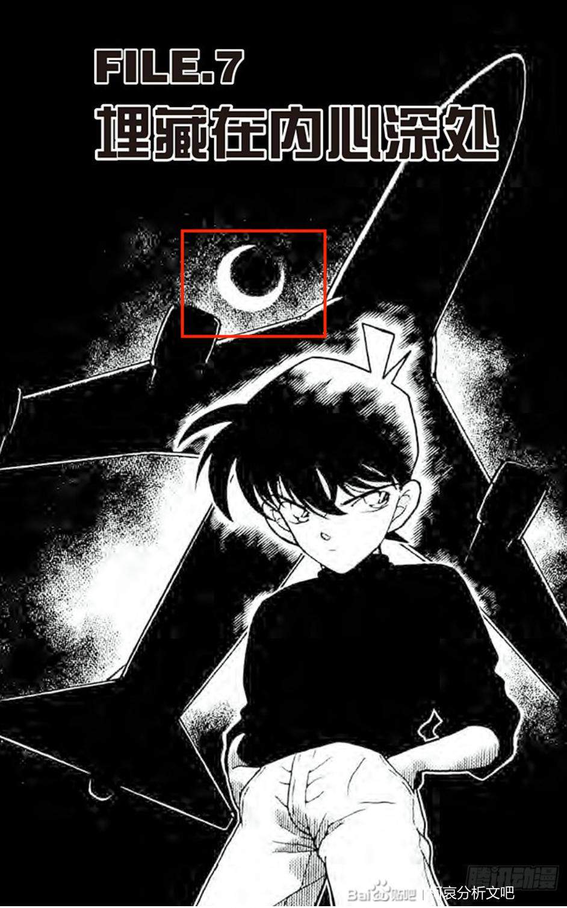
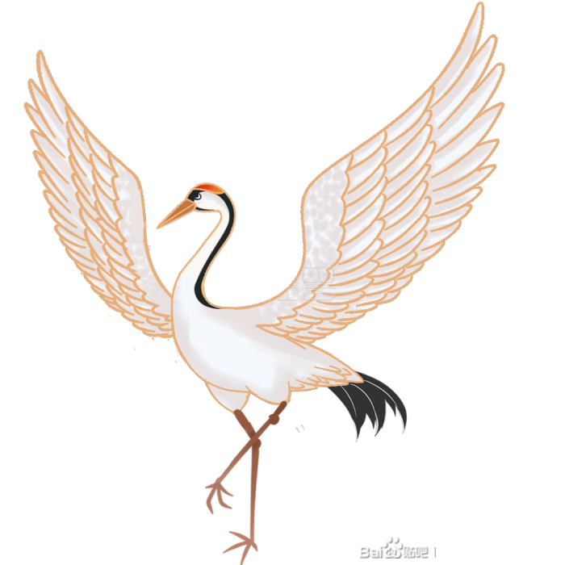
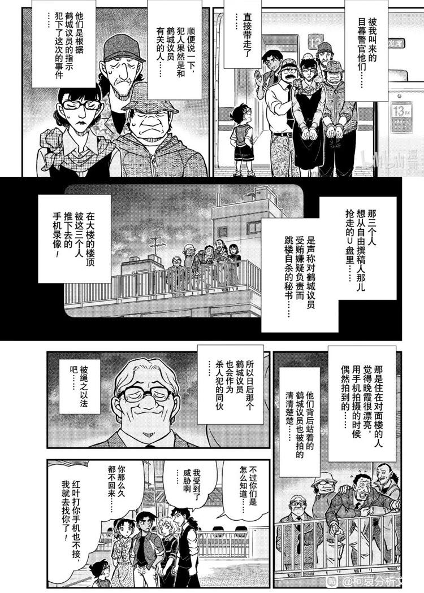

本帖主线为“鹤”在柯南中的意向以及柯哀关系中的立意。
副线为根据“太阳，星星与月亮”的意向对于黑组线的一些推测和暴论（副线在主线中夹杂出现）。
本帖较长，需要一点耐心哦。
重看漫画时发现“鹤”这个意向在柯南漫画中出现次数不多，但每次出现都是重要的场景。整理后发现“鹤”或许和A药甚至柯哀关系都有密不可分的联系。
本帖将盘点“鹤”的7次出场，每次出场都有其独特的指向性。
首先我们来看一下鹤在东亚的文化意义（一些前置条件，后续都会提到）：
1. 东亚地区用丹顶鹤象征吉祥和长寿，尤其以中日两国为多。（鹤与A药的关联）
2. 丹顶鹤象征爱情，他们一生只有一个伴侣，相亲相爱，不离不弃。如果一方死亡或失踪，另一方往往会陷入悲伤和孤独，甚至拒绝再次寻找新的伴侣。（鹤与名柯cp的关联）
副线为根据“太阳，星星与月亮”的意向对于黑组线的一些推测和暴论（副线在主线中夹杂出现）。
本帖较长，需要一点耐心哦。
重看漫画时发现“鹤”这个意向在柯南漫画中出现次数不多，但每次出现都是重要的场景。整理后发现“鹤”或许和A药甚至柯哀关系都有密不可分的联系。
本帖将盘点“鹤”的7次出场，每次出场都有其独特的指向性。
首先我们来看一下鹤在东亚的文化意义（一些前置条件，后续都会提到）：
1. 东亚地区用丹顶鹤象征吉祥和长寿，尤其以中日两国为多。（鹤与A药的关联）
2. 丹顶鹤象征爱情，他们一生只有一个伴侣，相亲相爱，不离不弃。如果一方死亡或失踪，另一方往往会陷入悲伤和孤独，甚至拒绝再次寻找新的伴侣。（鹤与名柯cp的关联）
“鹤”的第一次出现：
case:《来自黑衣组织的女子》Vol.18 File.6-Vol.19 File.1
分析关键词：假钞
先从灰原哀的初登场说起，大家都知道小哀登场的第一个案件是“假钞案”，案件中犯人使用了千元假钞去买香烟，俊也的哥哥由于画“夏目漱石”出色而被假钞团伙盯上去画万元假钞上的福泽谕吉。
案件中指1000元假钞的正面是“夏目漱石”，而另一面则是“仙鹤”图案。 红色方框部分是一个鹤的翅膀，为了更直观一点我放一张纸币正反面的图案 这也是漫画中“鹤”的*第一次*隐晦的出场。
这个看似不起眼的细节，我如此重视的原因就是，我认为 *“假钞案”* 是73为了灰原哀出场量身定做的案子，其中一定会有更多的细节值得推敲。
因为动画组的干扰，导致了灰原出场被延后，后续我猜测他希望灰原在第12卷出场，并且一定会参与到第《太阳，星星与月亮的秘密》那一个案子中（只可惜天不遂人愿）。我这么推测的原因有以下几点：
1. 画面构图的和谐性，你们真的不觉得这个标题封面旁边空出了一个位置给一个人吗？ 2.这个案件也和“假钞”有关！肖像画的画家为了躲避假钞委托人，由阿笠博士姑姑允许所以暂住在阿笠栗介的别墅。我觉得这一话可能也和黑衣组织有点关联，因为这属于拓展内容我放到下一楼详解。 3. 这个暗号表式青山引以为傲的设计，并且我们知道他是个执着的人，他在后续灰原登场的案子中提到了两次这个暗号，一次是《寻找玛利亚》，一次是《藏不住的古董盘》（这里都用动画标题概括）。我认为等哪天时机成熟了他一定会让柯哀再用一次这个暗号传递消息。
case:《来自黑衣组织的女子》Vol.18 File.6-Vol.19 File.1
分析关键词：假钞
先从灰原哀的初登场说起，大家都知道小哀登场的第一个案件是“假钞案”，案件中犯人使用了千元假钞去买香烟，俊也的哥哥由于画“夏目漱石”出色而被假钞团伙盯上去画万元假钞上的福泽谕吉。
案件中指1000元假钞的正面是“夏目漱石”，而另一面则是“仙鹤”图案。 红色方框部分是一个鹤的翅膀，为了更直观一点我放一张纸币正反面的图案 这也是漫画中“鹤”的*第一次*隐晦的出场。
这个看似不起眼的细节，我如此重视的原因就是，我认为 *“假钞案”* 是73为了灰原哀出场量身定做的案子，其中一定会有更多的细节值得推敲。
因为动画组的干扰，导致了灰原出场被延后，后续我猜测他希望灰原在第12卷出场，并且一定会参与到第《太阳，星星与月亮的秘密》那一个案子中（只可惜天不遂人愿）。我这么推测的原因有以下几点：
1. 画面构图的和谐性，你们真的不觉得这个标题封面旁边空出了一个位置给一个人吗？ 2.这个案件也和“假钞”有关！肖像画的画家为了躲避假钞委托人，由阿笠博士姑姑允许所以暂住在阿笠栗介的别墅。我觉得这一话可能也和黑衣组织有点关联，因为这属于拓展内容我放到下一楼详解。 3. 这个暗号表式青山引以为傲的设计，并且我们知道他是个执着的人，他在后续灰原登场的案子中提到了两次这个暗号，一次是《寻找玛利亚》，一次是《藏不住的古董盘》（这里都用动画标题概括）。我认为等哪天时机成熟了他一定会让柯哀再用一次这个暗号传递消息。
2024-09-15 19:09 | 一顾西辞无效率:这个鹤看得好细，不仔细看看不出来2024-09-15 19:38 | Angela忧忧:回复 一顾西辞无效率 :我在重看这个案子时，去查了一千日元纸币和一万日元纸币的图案的（一个是鹤一个是绿雉）。我想他都设计假钞案了，且重点就在于假钞图案（夏目漱石作为关键线索，重复出现和提及），肯定是知道两面都分别是什么的。按他的思路顺，虽然反复提及的是夏目漱石，但是隐藏了一些别的信息。
没看过的东西，先插个眼
2024-09-18 20:35 | Angela忧忧:更完啦 踢踢
这一楼是属于有点暴论性质的关于《太阳，星星与月亮的秘密》与黑衣组织有关的推测，是副线内容，和鹤的意向无关。
本来打算另开一篇，但是感觉有关联就在一篇中写掉，这样比较连贯。
----------------------------
首先是“太阳，星星和月亮” 三个意向在名柯中的指代：
本案第二话的标题“黑色的太阳”。
中国神话中其形象是一只黑乌鸦蹲居在金光闪烁的红日中央因而常称为**金乌**。原本共有十只，被后羿用神箭射下九只，只剩下一只。乌鸦在太阳中，是不是很符合“黑色的太阳”。
而星星，是和宫野志保强相关的，月亮我推测与工藤新一相关。因为在《飞天密室，工藤新一最初的事件》中，他们搭乘的飞机就是“luna”航空的（luna=月亮）。此案的多个漫画封面都有月亮。
即：
太阳=组织
星星=宫野志保
月亮=工藤新一
所以这一话简直是为组织，志保和新一量身定做的。
本案重点是美钞的模板。
美钞可是硬通货啊，国际主要的硬通货就是美金和黄金。
美钞直接兑黄金，省去了日元兑美钞的过程（参见《来自黑衣组织的女子》假钞团伙的目的），就是少了一道风险。
如果能把假钞兑成黄金，再建造一座由黄金建成的别馆那可别提有多保值了呢。
梳理一下本案时间线：
- 以本案中柯南提到的当时是1995年作为一个铆钉点
- 1927年：阿笠栗介（18岁）搬来别墅开始生活
- 1944年：阿笠栗介（37岁）邀请*年轻画家*为其和妹妹定子创作肖像画，阿笠定子（26岁）。
- 1945年：阿笠栗介（38岁）去世，巨额财产被藏起来，并要求别墅在其死后50年保持原样（阿笠博士回忆），阿笠定子搬离别墅；组织的计划开始（来自灰原在《竞技场胁迫事件》中自述）
- 1985年：阿笠定子开始收到有暗号匿名信。这之前几年画家接到假钞委托，可能于这一年躲进别墅（时间上并未十分明确，73有操作空间）。
- 1990-1991年：博士把暗号信交给工藤优作解读。此时画家应该还没有去世，不然姑妈在去世之前一定会去阁楼阁楼找一下人，收个尸。
- 1994年：阿笠栗介去世后49年，阿笠定子（76岁）去世。
接下来是我的暴论哦：
漫画中对于画家何时住进的别墅，奥田伦明（假钞定制委托人）委托的时间，其实有保留操作空间，并没有说的非常明确，只基于这一案，较为合理的推测像是十年前接到委托，然后躲进的别墅。
画家的年纪是和定子阿姨差不多大的，对于博士来说都是上一辈的人了，假钞定制犯人“奥田伦明”看起来比博士还要年轻，大概30-40岁的样子，也就是他委托假钞定制的时候才20-30岁左右。漫画中并没交待这个犯人定制假钞模板的原因和用途。
可能性1：
原本青山可能是想写这个假钞模板案子是和组织有关的，但是因为灰原哀没有登场，就换成了普通犯人，并且删去了原因。
可能性2：
可能“奥田伦明”就是组织基层，或者组织为了隐藏身份，绕了几层关系后选定的负责和画家对接的人。因为基层没有酒名也不用穿黑衣服，也有被捕的案例（比如沼渊己一郎）。且多数人被组织利用了都不知道是组织干的（《与黑衣组织的再会》灰原描述）。而如果定制假钞的委托时间比十年更久，奥田伦明可能是第二代画家和组织之间的对接人了。
组织进行药物开发、软体开发、其他zz及经济活动、养酒厂姐妹花等，肯定是需要大量金钱的，不然宫野明美案也不会设计成去抢银行了。不管干啥，都是想让明美死，不如给个风险系数更高的工作，在工作中意外死亡也很合理，且以明美的机智程度其实也早就意识到了组织派她去抢银行只是个要杀她的由头而已。所以抢银行对组织来说是个一举两得的事，成了可以拿到十亿日元，又可以杀死明美。没成明美照样没有活路。
----------------------------
反复在朗姆篇中在灰原面前提及这个案子，很有可能是让灰原知道本案有关的线索，看是否会回忆起什么，爆点组织相关的瓜，比如实验室资金来源之类的。
当然也有可能点明一下她了解“太阳，星星与月亮”的暗号，为后续柯哀或少侦关键时刻传递消息做铺垫。
以上就是我关于这一案的一些暴论，73是给自己留了操作空间。
本来打算另开一篇，但是感觉有关联就在一篇中写掉，这样比较连贯。
----------------------------
首先是“太阳，星星和月亮” 三个意向在名柯中的指代：
本案第二话的标题“黑色的太阳”。
中国神话中其形象是一只黑乌鸦蹲居在金光闪烁的红日中央因而常称为**金乌**。原本共有十只，被后羿用神箭射下九只，只剩下一只。乌鸦在太阳中，是不是很符合“黑色的太阳”。
而星星，是和宫野志保强相关的，月亮我推测与工藤新一相关。因为在《飞天密室，工藤新一最初的事件》中，他们搭乘的飞机就是“luna”航空的（luna=月亮）。此案的多个漫画封面都有月亮。
即：
太阳=组织
星星=宫野志保
月亮=工藤新一
所以这一话简直是为组织，志保和新一量身定做的。

第二点：组织需要大量的金钱，且组织在美国有zz及经济活动本案重点是美钞的模板。
美钞可是硬通货啊，国际主要的硬通货就是美金和黄金。
美钞直接兑黄金，省去了日元兑美钞的过程（参见《来自黑衣组织的女子》假钞团伙的目的），就是少了一道风险。
如果能把假钞兑成黄金，再建造一座由黄金建成的别馆那可别提有多保值了呢。
梳理一下本案时间线：
- 以本案中柯南提到的当时是1995年作为一个铆钉点
- 1927年：阿笠栗介（18岁）搬来别墅开始生活
- 1944年：阿笠栗介（37岁）邀请*年轻画家*为其和妹妹定子创作肖像画，阿笠定子（26岁）。
- 1945年：阿笠栗介（38岁）去世，巨额财产被藏起来，并要求别墅在其死后50年保持原样（阿笠博士回忆），阿笠定子搬离别墅；组织的计划开始（来自灰原在《竞技场胁迫事件》中自述）
- 1985年：阿笠定子开始收到有暗号匿名信。这之前几年画家接到假钞委托，可能于这一年躲进别墅（时间上并未十分明确，73有操作空间）。
- 1990-1991年：博士把暗号信交给工藤优作解读。此时画家应该还没有去世，不然姑妈在去世之前一定会去阁楼阁楼找一下人，收个尸。
- 1994年：阿笠栗介去世后49年，阿笠定子（76岁）去世。
接下来是我的暴论哦：
漫画中对于画家何时住进的别墅，奥田伦明（假钞定制委托人）委托的时间，其实有保留操作空间，并没有说的非常明确，只基于这一案，较为合理的推测像是十年前接到委托，然后躲进的别墅。
画家的年纪是和定子阿姨差不多大的，对于博士来说都是上一辈的人了，假钞定制犯人“奥田伦明”看起来比博士还要年轻，大概30-40岁的样子，也就是他委托假钞定制的时候才20-30岁左右。漫画中并没交待这个犯人定制假钞模板的原因和用途。
可能性1：
原本青山可能是想写这个假钞模板案子是和组织有关的，但是因为灰原哀没有登场，就换成了普通犯人，并且删去了原因。
可能性2：
可能“奥田伦明”就是组织基层，或者组织为了隐藏身份，绕了几层关系后选定的负责和画家对接的人。因为基层没有酒名也不用穿黑衣服，也有被捕的案例（比如沼渊己一郎）。且多数人被组织利用了都不知道是组织干的（《与黑衣组织的再会》灰原描述）。而如果定制假钞的委托时间比十年更久，奥田伦明可能是第二代画家和组织之间的对接人了。
组织进行药物开发、软体开发、其他zz及经济活动、养酒厂姐妹花等，肯定是需要大量金钱的，不然宫野明美案也不会设计成去抢银行了。不管干啥，都是想让明美死，不如给个风险系数更高的工作，在工作中意外死亡也很合理，且以明美的机智程度其实也早就意识到了组织派她去抢银行只是个要杀她的由头而已。所以抢银行对组织来说是个一举两得的事，成了可以拿到十亿日元，又可以杀死明美。没成明美照样没有活路。
----------------------------
反复在朗姆篇中在灰原面前提及这个案子，很有可能是让灰原知道本案有关的线索，看是否会回忆起什么，爆点组织相关的瓜，比如实验室资金来源之类的。
当然也有可能点明一下她了解“太阳，星星与月亮”的暗号，为后续柯哀或少侦关键时刻传递消息做铺垫。
以上就是我关于这一案的一些暴论，73是给自己留了操作空间。
为啥我觉得《太阳，星星与月亮的秘密》这么重要，是因为后续一些案子充满了他的影子：
比如《寻找玛利亚》中箭头的指示、《宫野明美的时光胶囊》中纸条顺序的指示。 《太阳，星星与月亮的秘密》里是双层暗号，除了日星月暗号，博士创造了“跟着箭头走”的暗号
《寻找玛利亚》中的箭头暗号是玛利亚的奶奶想出来的。
这种玩法是不是他们那一辈人的共识？还有玛利亚的妈妈和博士又是怎么熟悉起来的？玛利亚为什么不拜托柯南去拜托小哀帮她延期开放日。他们身上有太多的共性和联系，73对此真的给自己留了很大的操作空间。
除了暗号，这个案子还有很多的可能性可以被扩写：
比如：阿笠博士的伯父喜欢有机关的设计，别墅里是否不止阁楼一个机关？阿笠定子是小学老师的身份-为何要设定这个身份，是漫画中谁的小学老师？等
----------------------------
这层结束后会回归“鹤”的探讨~
比如《寻找玛利亚》中箭头的指示、《宫野明美的时光胶囊》中纸条顺序的指示。 《太阳，星星与月亮的秘密》里是双层暗号，除了日星月暗号，博士创造了“跟着箭头走”的暗号
《寻找玛利亚》中的箭头暗号是玛利亚的奶奶想出来的。
这种玩法是不是他们那一辈人的共识？还有玛利亚的妈妈和博士又是怎么熟悉起来的？玛利亚为什么不拜托柯南去拜托小哀帮她延期开放日。他们身上有太多的共性和联系，73对此真的给自己留了很大的操作空间。
除了暗号，这个案子还有很多的可能性可以被扩写：
比如：阿笠博士的伯父喜欢有机关的设计，别墅里是否不止阁楼一个机关？阿笠定子是小学老师的身份-为何要设定这个身份，是漫画中谁的小学老师？等
----------------------------
这层结束后会回归“鹤”的探讨~
“鹤”的第二次出现：
case:《飞天密室 工藤新一最初的事件》Vol.21 File.4-Vol.21 File.7
分析关键词：鸟
本案第一章标题为：“最初的招呼” 可以理解为组织第一次和工藤新一的碰撞。
本案中嫌疑犯和凶手的名字都是鸟相关的。
其中一位被大家推测和黑衣组织有关的自由记者“爱德华·克洛”的名字就是乌鸦，有一位摄影师的名字叫“立川千鹤”。
这位“爱德华·克洛”是与美国的银行家有交集的，大概可以代表为组织在美国是有zz和经济活动，和《太阳，星星与月亮》的秘密中组织需要美钞的推论能对上。
虽然这里立川千鹤并没有特别大的映射，但是这个案子是“鸟”的意向以补丁的形式第一次被引进（孽缘啊，第一个案子就和组织扯上了关系，天降大任于工藤新一）。
附一个小暴论，但证据比较少，只是一个细节推论：
名柯中一共出现过三家航空公司，分别是：
1. 本案开头，主角团出去琉球玩乘坐的飞机的logo神似乌鸦，bird标识，但没明确是哪一家公司，暂时算一个独立的航空公司。 2. 日本航空（JAL），日航的标志是鹤之丸（出自漫画《沉默的航线》篇章，并没画出标志，网上搜了一下仙鹤标志给大家看一下）； 3. luna航空（出自漫画《飞天密室 工藤新一最初的事件》）。在前文中已贴图
如果大家有找到更多的漫画中航空公司的信息，也可以一起讨论。
（不过也有一个可能就是JAL的标志被73从仙鹤改成了乌鸦，一共两家航空公司。但在他没有明确画出来之前，一切都有操作空间）
case:《飞天密室 工藤新一最初的事件》Vol.21 File.4-Vol.21 File.7
分析关键词：鸟
本案第一章标题为：“最初的招呼” 可以理解为组织第一次和工藤新一的碰撞。
本案中嫌疑犯和凶手的名字都是鸟相关的。
其中一位被大家推测和黑衣组织有关的自由记者“爱德华·克洛”的名字就是乌鸦，有一位摄影师的名字叫“立川千鹤”。
这位“爱德华·克洛”是与美国的银行家有交集的，大概可以代表为组织在美国是有zz和经济活动，和《太阳，星星与月亮》的秘密中组织需要美钞的推论能对上。
虽然这里立川千鹤并没有特别大的映射，但是这个案子是“鸟”的意向以补丁的形式第一次被引进（孽缘啊，第一个案子就和组织扯上了关系，天降大任于工藤新一）。
附一个小暴论，但证据比较少，只是一个细节推论：
名柯中一共出现过三家航空公司，分别是：
1. 本案开头，主角团出去琉球玩乘坐的飞机的logo神似乌鸦，bird标识，但没明确是哪一家公司，暂时算一个独立的航空公司。 2. 日本航空（JAL），日航的标志是鹤之丸（出自漫画《沉默的航线》篇章，并没画出标志，网上搜了一下仙鹤标志给大家看一下）； 3. luna航空（出自漫画《飞天密室 工藤新一最初的事件》）。在前文中已贴图
如果大家有找到更多的漫画中航空公司的信息，也可以一起讨论。
（不过也有一个可能就是JAL的标志被73从仙鹤改成了乌鸦，一共两家航空公司。但在他没有明确画出来之前，一切都有操作空间）
“鹤”的第三次出现：
case：《怪盗基德与四幅名画》Vol.53 File.1-Vol.53 File.4
关键词：《纯白》
主要推论：**鹤-雪-纯白-灰原哀之间的关系。**
这个案子小哀并没有登场。给大家划一下重点：
四名画是指：及川武赖（画家）创作的四幅画，代表花的《红莲》、代表月的《金色》、代表鸟（鹤）的《纯白》和代表风的《青岚》。前三幅均被有钱人买走。
画家原本真正想画的是“花雪月”系列，只有三幅，没有“风”。且他并不想画鹤，他想画的《纯白》只有雪。“鹤"是及川武赖的岳父（82岁）要求加上去的，为了让他有动力画第四幅并从丧妻之痛走出来，并由岳父用嘴叼着笔代他完成了《青岚》。
也就是说，在老一辈人的心里，鹤与纯白是挂钩的！（本案以四幅名画的名字作为标题，纯白是最后一话的标题，明明案子中《青岚》才是最后一幅画，为何以《纯白》作为最后的标题呢，我想应该是对应了老人希望女婿走出丧妻之痛的那“纯白的心情”。虽然没有传达到，最后被杀害了，但鼓励他人就是纯白的善意。） ------------
我搜集了一下名柯中带有颜色的标题，以及圣诞哀的信息，总结出与灰原哀强相关的颜色是：黑、灰、白、绯红。
推测了一下这四个颜色与哀的经历和心境的对应：
黑：来自黑衣组织
灰：从黑暗组织逃出来的，游走在黑与白中间地带的自己。在圣诞贺图中有许多张自称灰色圣诞老人。（详细的圣诞哀盘点可以看b站up @小栗粒粒出奇迹 的视频，搜关键词圣诞就能看到）
白：雪和灰原强相关大家都是认可的，前期黑组与灰原的篇章，标题都有黑白对比，以及后期的“纯白的心情”（漫画标题附在本楼最后）
绯红：宫野志保最喜欢的颜色；“绯色的侦探”工藤新一（大表哥也是绯色，但是大表哥是自家人，希望宫野志保能和那位绯色的侦探成为一家人哦，亲戚达咩！） 黑-灰-白，是灰原哀的身份和心情变化的过程。但其实她本身就是黑暗里开出的纯白的花。是乱序中的善良。
纯白的心情同时也是哀对柯感情的一个重大暗示：
灰原哀对江户川柯南的纯白的心情，就是“我爱你” **鹤与雪强相关，纯白的雪与灰原哀强相关，可以推出鹤-雪-纯白-灰原哀之间的关系。**
--------------------------------------
参考标题：
242 白色世界（白の世界）
与黑衣组织的再会（动画第176-178话）
380 白色的雪…黑暗的影子…（白い雪...黒い影....）
与黑暗组织接触（动画第309-311话）
980 纯白的心情（真っ白な気持ち）
手臂白皙的女人（动画第896-897话）
547 纯白（純白）
怪盗KID与四幅名画（动画第469-470话）
883 深红色的侦探（緋色の探偵）
工藤新一水族馆事件（动画第772-773话）
case：《怪盗基德与四幅名画》Vol.53 File.1-Vol.53 File.4
关键词：《纯白》
主要推论：**鹤-雪-纯白-灰原哀之间的关系。**
这个案子小哀并没有登场。给大家划一下重点：
四名画是指：及川武赖（画家）创作的四幅画，代表花的《红莲》、代表月的《金色》、代表鸟（鹤）的《纯白》和代表风的《青岚》。前三幅均被有钱人买走。
画家原本真正想画的是“花雪月”系列，只有三幅，没有“风”。且他并不想画鹤，他想画的《纯白》只有雪。“鹤"是及川武赖的岳父（82岁）要求加上去的，为了让他有动力画第四幅并从丧妻之痛走出来，并由岳父用嘴叼着笔代他完成了《青岚》。
也就是说，在老一辈人的心里，鹤与纯白是挂钩的！（本案以四幅名画的名字作为标题，纯白是最后一话的标题，明明案子中《青岚》才是最后一幅画，为何以《纯白》作为最后的标题呢，我想应该是对应了老人希望女婿走出丧妻之痛的那“纯白的心情”。虽然没有传达到，最后被杀害了，但鼓励他人就是纯白的善意。） ------------
我搜集了一下名柯中带有颜色的标题，以及圣诞哀的信息，总结出与灰原哀强相关的颜色是：黑、灰、白、绯红。
推测了一下这四个颜色与哀的经历和心境的对应：
黑：来自黑衣组织
灰：从黑暗组织逃出来的，游走在黑与白中间地带的自己。在圣诞贺图中有许多张自称灰色圣诞老人。（详细的圣诞哀盘点可以看b站up @小栗粒粒出奇迹 的视频，搜关键词圣诞就能看到）
白：雪和灰原强相关大家都是认可的，前期黑组与灰原的篇章，标题都有黑白对比，以及后期的“纯白的心情”（漫画标题附在本楼最后）
绯红：宫野志保最喜欢的颜色；“绯色的侦探”工藤新一（大表哥也是绯色，但是大表哥是自家人，希望宫野志保能和那位绯色的侦探成为一家人哦，亲戚达咩！） 黑-灰-白，是灰原哀的身份和心情变化的过程。但其实她本身就是黑暗里开出的纯白的花。是乱序中的善良。
纯白的心情同时也是哀对柯感情的一个重大暗示：
灰原哀对江户川柯南的纯白的心情，就是“我爱你” **鹤与雪强相关，纯白的雪与灰原哀强相关，可以推出鹤-雪-纯白-灰原哀之间的关系。**
--------------------------------------
参考标题：
242 白色世界（白の世界）
与黑衣组织的再会（动画第176-178话）
380 白色的雪…黑暗的影子…（白い雪...黒い影....）
与黑暗组织接触（动画第309-311话）
980 纯白的心情（真っ白な気持ち）
手臂白皙的女人（动画第896-897话）
547 纯白（純白）
怪盗KID与四幅名画（动画第469-470话）
883 深红色的侦探（緋色の探偵）
工藤新一水族馆事件（动画第772-773话）
cy
2024-09-18 20:36 | Angela忧忧:更完啦

cy
2024-09-18 20:36 | Angela忧忧:全部更完啦
厉害
2024-09-18 20:36 | Angela忧忧:7个case 都更完啦
“鹤”的第四次登场：
case：《电视台的恶魔》Vol.57 File.5-Vol.57 File.7
分析关键词：撒旦、千纸鹤、镜子
在日本文化中，千纸鹤**象征着和平、希望、长寿、健康和好运等**，遇到困难，日本民众习惯折出一串串千纸鹤，为别人祈福、为自己带来希望。本话中的”千纸鹤“是“健康与希望” 的象征。
案件梗概：
本案的犯人外表是撒旦，但内心是个重感情的人，真正的恶魔是社长。撒旦鬼冢喉咙痛住院期间有粉丝天天寄来慰问信和千纸鹤，突然一天那孩子的来信停止了，原因是社长私自在鬼冢的主页上写道“撒旦为了复活需要鲜血做祭品”，引诱未成年粉丝自杀。
鬼冢的犯罪事实是由”千纸鹤“揭露的，为了让折的纸鹤膨胀起来，需要向纸鹤内部吹气，但是纸鹤上没有沾有鬼冢的紫色口红，但烟嘴上却有口红印。证明了他是卸妆后杀人再重新化妆的（利用三角板和深色纸张当镜子化妆）。
粉丝给鬼冢折千纸鹤，希望他早日恢复健康，而鬼冢先生确实在粉丝的鼓励下恢复健康重新站在了舞台上（此处就是暗示千纸鹤和健康之间的一种信仰关系）。鬼冢也从此喜欢上了折千纸鹤。小哀吐槽“撒旦折纸会影响形象”。撒旦鬼冢恐吓侦探团说，如果说出去的话会把他们都灭口。说明撒旦的形象在人们心里是“狠，恶，冷酷”的，但千纸鹤在人们心里是“善与温暖”的。是一种相反且背离的关系。
案件里证明真相的千纸鹤有五只，就像代表着希望和善良的少年侦探团五人组。仿佛冥冥中是已经去世的那位乐迷希望通过这五只千纸鹤，让鬼冢先生能为自己犯的错误赎罪。以后再创造出能激励人心的歌曲。
「三途之三」乐队的名字其实也很有意思，把其实把三竖过来，就是「三途之川」，在日本文化里是分隔阴阳的河。（在中国文化里我们叫它忘川）三途川的“三途"，乃地狱、恶鬼、畜生三道。撒旦本身，就是堕入地狱的天使。少年侦探队一开始还猜测他是“罪恶组织的头目”。“假面超人里的坏人”。 我的一个暴论就是：
因为案件中有一个关键道具是镜子，文学作品中镜子往往是本我的一个投射，镜中自我是查尔斯·库利提出来的一个理论。主旨：从别人对我们的态度与行为及想像别人对我们的看法，来获得自我的概念。
撒旦鬼冢的自我认知或许也在影射小哀的自我认知。撒旦鬼冢非常在意粉丝的看法，粉丝不来信了会以为自己是被讨厌了，觉得自己或许就是“假面超人里的怪人”。小哀也是如此，其实她是在意知道她身份的人对她的看法的，她的自我认知来自于认为别人眼中的自己是地狱来的，是撒旦。但其实她是真正善良的人，真正的恶魔另有其人，是利用了他家人的组织。她喜欢的和她向往的，都是和她原本认知的自己不符合的东西，就比如千纸鹤。但她的真身其实就是“鹤”，遇见了同样的四个纯白的孩子。在一起的日子就是充满希望的。 ---------------------
最后歪个楼，送达加一张柯步情头哈哈哈哈： --------------------------
下一次就到了大家期待的“象征爱情”的鹤了哈哈哈哈哈，我写的时候也超级激动的！！！！！
case：《电视台的恶魔》Vol.57 File.5-Vol.57 File.7
分析关键词：撒旦、千纸鹤、镜子
在日本文化中，千纸鹤**象征着和平、希望、长寿、健康和好运等**，遇到困难，日本民众习惯折出一串串千纸鹤，为别人祈福、为自己带来希望。本话中的”千纸鹤“是“健康与希望” 的象征。
案件梗概：
本案的犯人外表是撒旦，但内心是个重感情的人，真正的恶魔是社长。撒旦鬼冢喉咙痛住院期间有粉丝天天寄来慰问信和千纸鹤，突然一天那孩子的来信停止了，原因是社长私自在鬼冢的主页上写道“撒旦为了复活需要鲜血做祭品”，引诱未成年粉丝自杀。
鬼冢的犯罪事实是由”千纸鹤“揭露的，为了让折的纸鹤膨胀起来，需要向纸鹤内部吹气，但是纸鹤上没有沾有鬼冢的紫色口红，但烟嘴上却有口红印。证明了他是卸妆后杀人再重新化妆的（利用三角板和深色纸张当镜子化妆）。
粉丝给鬼冢折千纸鹤，希望他早日恢复健康，而鬼冢先生确实在粉丝的鼓励下恢复健康重新站在了舞台上（此处就是暗示千纸鹤和健康之间的一种信仰关系）。鬼冢也从此喜欢上了折千纸鹤。小哀吐槽“撒旦折纸会影响形象”。撒旦鬼冢恐吓侦探团说，如果说出去的话会把他们都灭口。说明撒旦的形象在人们心里是“狠，恶，冷酷”的，但千纸鹤在人们心里是“善与温暖”的。是一种相反且背离的关系。
案件里证明真相的千纸鹤有五只，就像代表着希望和善良的少年侦探团五人组。仿佛冥冥中是已经去世的那位乐迷希望通过这五只千纸鹤，让鬼冢先生能为自己犯的错误赎罪。以后再创造出能激励人心的歌曲。
「三途之三」乐队的名字其实也很有意思，把其实把三竖过来，就是「三途之川」，在日本文化里是分隔阴阳的河。（在中国文化里我们叫它忘川）三途川的“三途"，乃地狱、恶鬼、畜生三道。撒旦本身，就是堕入地狱的天使。少年侦探队一开始还猜测他是“罪恶组织的头目”。“假面超人里的坏人”。 我的一个暴论就是：
因为案件中有一个关键道具是镜子，文学作品中镜子往往是本我的一个投射，镜中自我是查尔斯·库利提出来的一个理论。主旨：从别人对我们的态度与行为及想像别人对我们的看法，来获得自我的概念。
撒旦鬼冢的自我认知或许也在影射小哀的自我认知。撒旦鬼冢非常在意粉丝的看法，粉丝不来信了会以为自己是被讨厌了，觉得自己或许就是“假面超人里的怪人”。小哀也是如此，其实她是在意知道她身份的人对她的看法的，她的自我认知来自于认为别人眼中的自己是地狱来的，是撒旦。但其实她是真正善良的人，真正的恶魔另有其人，是利用了他家人的组织。她喜欢的和她向往的，都是和她原本认知的自己不符合的东西，就比如千纸鹤。但她的真身其实就是“鹤”，遇见了同样的四个纯白的孩子。在一起的日子就是充满希望的。 ---------------------
最后歪个楼，送达加一张柯步情头哈哈哈哈： --------------------------
下一次就到了大家期待的“象征爱情”的鹤了哈哈哈哈哈，我写的时候也超级激动的！！！！！
2024-09-22 11:20 | 宋小姐的新账号:（好像这里五只千纸鹤的严肃是不一样的？）2024-09-22 15:25 | Angela忧忧:回复 宋小姐的新账号 :对的 五只颜色都不太一样 一开始我看起来是一只黑 四只白。后来发现别的格子里还有灰的。估计是彩纸。但是有一只是深色是肯定的。因为作案手法就是深色纸+三角尺做成镜子。
”鹤“的第五次出现：
case：《结婚申请表的密码》Vol.89 File.8-Vol.89 File.10
关键词：真正的夫妻，鹤
警示厅cp秀吉x由美的案子，除了广为讨论的宁茶论，这里”鹤“的意向被忽视了。
此案中引出了”鹤“是代表爱情的象征：
丹顶鹤是对爱情非常专一的动物，它们通常形影不离，一同出行，是一对模范的夫妻，而且一旦一方死亡后，剩余的一只丹顶鹤会表现出极大的悲痛，会守在身边一直不离不弃。
（这段描述，嗯，有点东西。）
先来标题页一张大大的仙鹤镇楼： 73在”真正的夫妻“这一话中，反复强调”夫妻“的概念，这甚至成为了柯南之后解谜的关键线索，他在老爷爷关于”夫妻“这个词的反复暗示下，和把密码表放在垃圾桶里的操作（73管这叫”鹤立鸡群“），想到了要把密码表折成千纸鹤，并且里外各折一次的方法（里外各折一次就代表了夫妻一心同体）来破解暗号。 这里73用：密码表放在垃圾桶中来比喻”鹤立鸡群“，中国人都会觉得这比喻不恰当吧，但是我合理怀疑他就是为了引出”鹤“的概念，为了碟醋包了盘饺子。而且配合小柯说出”鹤立鸡群“的就是小哀哦，然后小柯接着立刻补充小哀的说法，又是配合默契你说上句我接下句的日常呢 ♡（笑） 这是演示第二次叠纸鹤，和第一次相反的方向，即一体两面。随后便得出暗号是根号3。 在老爷爷的认知里，秀吉和宁宁才是真正的夫妻。而在柯哀与警视厅cp的篇章中引入”鹤“这种一夫一妻制的爱情鸟，很难不引人遐想啊！
在”鹤“第三次出现时，我们已经论证了，”鹤与灰原哀强相关“。
这里也可以说明灰原像”鹤“一样是个情感洁癖，很符合73给她按的”出轨研究家“的人设。或者说她在爱情方面和”鹤“一样倔强，认定了一个就不回头。而像”鹤“一样的她这一辈子只会和一个人结为夫妻，不会移情。她的其他cp线都被73斩断了，那么大概也只有那个大侦探能成为她的丈夫。再结合秀由cp的映射，即得出：真正的夫妻是丰成秀吉和宁宁，是羽田秀吉和宫本由美，是工藤新一和宫野志保。
---------------------------
这里补充一个我对初遇论的看法：
如果初遇论真的成立的话，我会认为是在北海道，而不是在米花市。推理思路如下：
1. 丹顶鹤是北海道的“道鸟”（1964年指定的）。是世上唯一全年有丹顶鹤栖息的地方，而丹顶鹤可以象征爱情。即：在北海道可以遇见爱情鸟丹顶鹤。鹤的意向与灰原哀是有关系的。
2. 《宫野明美的时间胶囊中》明美的同学回忆中的照片和时间胶囊里的照片不是同一张。同学回忆中明美和小志保都穿着冬天的衣服，而志保印象中并不知道姐姐在帝丹小学读过书。即可推论：那张照片或许就不是在米花拍的，是在另一个寒冷的地方。（这一点北海道就很符合）。（漫画中没有画出颜色，但小志保穿的毛茸茸的真的很像个圣诞老人，好可爱。） 3. 漫画中时光胶囊的开篇标题是”没想到会在这种地方见到你“，除了是明美同学的想法，是否也能解读成工藤新一的想法”没想到会在（北海道）这种地方见到你（宫野志保）“。
4. 新一爸爸的签售会，最早是在北海道，签售会开头还提到了雪，雪的意向又和志保强相关。
5. 柯哀二人都知道北海道特有的天气现象”钻石尘”，又称“日柱”。（高佐cp回）
6. 卡拉ok杀人事件里，73画了和小哀形象很像的大美女，柯子直接反应激烈，先是脸红，在美女被奚落后又非常生气。合理怀疑茶色头发是隐藏在他内心深处的xp。
----------------------------
我对初遇论的小脑洞就是（随便猜测的故事）：
小新一在和爸爸去北海道签售会的时候刚好在那过了圣诞节，在气温很低的那一个白天，遇见了打扮成小小圣诞老人的宫野志保小朋友，还一起看到了丹顶鹤。但是夜晚来临前就被分开了。新一认为那个小朋友是圣诞老公公的手下，晚上被抓去派送圣诞礼物了。（笑）
case：《结婚申请表的密码》Vol.89 File.8-Vol.89 File.10
关键词：真正的夫妻，鹤
警示厅cp秀吉x由美的案子，除了广为讨论的宁茶论，这里”鹤“的意向被忽视了。
此案中引出了”鹤“是代表爱情的象征：
丹顶鹤是对爱情非常专一的动物，它们通常形影不离，一同出行，是一对模范的夫妻，而且一旦一方死亡后，剩余的一只丹顶鹤会表现出极大的悲痛，会守在身边一直不离不弃。
（这段描述，嗯，有点东西。）
先来标题页一张大大的仙鹤镇楼： 73在”真正的夫妻“这一话中，反复强调”夫妻“的概念，这甚至成为了柯南之后解谜的关键线索，他在老爷爷关于”夫妻“这个词的反复暗示下，和把密码表放在垃圾桶里的操作（73管这叫”鹤立鸡群“），想到了要把密码表折成千纸鹤，并且里外各折一次的方法（里外各折一次就代表了夫妻一心同体）来破解暗号。 这里73用：密码表放在垃圾桶中来比喻”鹤立鸡群“，中国人都会觉得这比喻不恰当吧，但是我合理怀疑他就是为了引出”鹤“的概念，为了碟醋包了盘饺子。而且配合小柯说出”鹤立鸡群“的就是小哀哦，然后小柯接着立刻补充小哀的说法，又是配合默契你说上句我接下句的日常呢 ♡（笑） 这是演示第二次叠纸鹤，和第一次相反的方向，即一体两面。随后便得出暗号是根号3。 在老爷爷的认知里，秀吉和宁宁才是真正的夫妻。而在柯哀与警视厅cp的篇章中引入”鹤“这种一夫一妻制的爱情鸟，很难不引人遐想啊！
在”鹤“第三次出现时，我们已经论证了，”鹤与灰原哀强相关“。
这里也可以说明灰原像”鹤“一样是个情感洁癖，很符合73给她按的”出轨研究家“的人设。或者说她在爱情方面和”鹤“一样倔强，认定了一个就不回头。而像”鹤“一样的她这一辈子只会和一个人结为夫妻，不会移情。她的其他cp线都被73斩断了，那么大概也只有那个大侦探能成为她的丈夫。再结合秀由cp的映射，即得出：真正的夫妻是丰成秀吉和宁宁，是羽田秀吉和宫本由美，是工藤新一和宫野志保。
---------------------------
这里补充一个我对初遇论的看法：
如果初遇论真的成立的话，我会认为是在北海道，而不是在米花市。推理思路如下：
1. 丹顶鹤是北海道的“道鸟”（1964年指定的）。是世上唯一全年有丹顶鹤栖息的地方，而丹顶鹤可以象征爱情。即：在北海道可以遇见爱情鸟丹顶鹤。鹤的意向与灰原哀是有关系的。
2. 《宫野明美的时间胶囊中》明美的同学回忆中的照片和时间胶囊里的照片不是同一张。同学回忆中明美和小志保都穿着冬天的衣服，而志保印象中并不知道姐姐在帝丹小学读过书。即可推论：那张照片或许就不是在米花拍的，是在另一个寒冷的地方。（这一点北海道就很符合）。（漫画中没有画出颜色，但小志保穿的毛茸茸的真的很像个圣诞老人，好可爱。） 3. 漫画中时光胶囊的开篇标题是”没想到会在这种地方见到你“，除了是明美同学的想法，是否也能解读成工藤新一的想法”没想到会在（北海道）这种地方见到你（宫野志保）“。
4. 新一爸爸的签售会，最早是在北海道，签售会开头还提到了雪，雪的意向又和志保强相关。
5. 柯哀二人都知道北海道特有的天气现象”钻石尘”，又称“日柱”。（高佐cp回）
6. 卡拉ok杀人事件里，73画了和小哀形象很像的大美女，柯子直接反应激烈，先是脸红，在美女被奚落后又非常生气。合理怀疑茶色头发是隐藏在他内心深处的xp。
----------------------------
我对初遇论的小脑洞就是（随便猜测的故事）：
小新一在和爸爸去北海道签售会的时候刚好在那过了圣诞节，在气温很低的那一个白天，遇见了打扮成小小圣诞老人的宫野志保小朋友，还一起看到了丹顶鹤。但是夜晚来临前就被分开了。新一认为那个小朋友是圣诞老公公的手下，晚上被抓去派送圣诞礼物了。（笑）
2024-10-02 00:11 | 变成一道墙:牛，新思路
”鹤“的第六次出现：
case：《藏不住的古董盘》Vol.97 File.10-Vol.98 File.2
关键词：仙鹤，黑，时光倒流
本案中的仙鹤，所象征的是“长寿”。
这一案的重点道具是”仙鹤纹样“的古董盘，关键颜色：黑。这一案件再次在灰原面前提到了”月亮，星星与太阳“的暗号，之前的楼里已经讨论过反复提起肯定会让它发生作用。有可能关键时刻会让柯哀用上。 在这一话中提到了”可以让时光倒流的药物“解密了玛丽的身份。秀一也察觉到了妈妈变小的事情。
寓意长寿的仙鹤与时光倒流被绑定在了同一话，是否揭露了A药的本质是让人长生。或者是在细胞老化时自动更新，让身体机能永远保持在最顶峰的状态。（让我想起了现实中那个和儿子换血的富豪，他的身体年龄确实实现了倒退。）
case：《藏不住的古董盘》Vol.97 File.10-Vol.98 File.2
关键词：仙鹤，黑，时光倒流
本案中的仙鹤，所象征的是“长寿”。
这一案的重点道具是”仙鹤纹样“的古董盘，关键颜色：黑。这一案件再次在灰原面前提到了”月亮，星星与太阳“的暗号，之前的楼里已经讨论过反复提起肯定会让它发生作用。有可能关键时刻会让柯哀用上。 在这一话中提到了”可以让时光倒流的药物“解密了玛丽的身份。秀一也察觉到了妈妈变小的事情。
寓意长寿的仙鹤与时光倒流被绑定在了同一话，是否揭露了A药的本质是让人长生。或者是在细胞老化时自动更新，让身体机能永远保持在最顶峰的状态。（让我想起了现实中那个和儿子换血的富豪，他的身体年龄确实实现了倒退。）
2024-09-30 09:18 | 五月七日🍭:请问是哪个富豪？？2024-09-30 13:31 | Angela忧忧:回复 五月七日🍭 :bryan Johnson2024-09-30 15:24 | 五月七日🍭:回复 Angela忧忧 :好的，谢谢
”鹤“的第七次出现（前情提示：这一篇可能有一点暴论，有不同意见我都可以接受，因为本来就是我灵光一现的产物。）：
《风之女神》Vol.101 File.4-6
警视厅cp 萩原千速x横沟重悟
关键词：报恩
关于鹤，日本有一个很有名的民间故事，叫“白鹤报恩”。大概说的是：老翁帮助中了陷阱的鹤，那只白鹤变成人类女性的样子来给老翁和他老婆报恩。通过拔下自己身上的羽毛织出漂亮的布来帮助他们致富。
而风之女神，萩原千速可能就是”鹤“的化身。
先看第一点：
73表示他做出的画风上最大的改变是在风之女神篇给萩原千速画了翅膀，并被认为是非常冒险的事。73其实画风一直是保守的，但为什么他要做这么冒险的行动呢？在后期其实只要维持住画风，不做出改变也并不会有人有异议。所以我觉得他铤而走险画翅膀是有目的的，也是为了向读者暗示些什么。 而巧合的是萩原千速的翅膀，画的非常地像**仙鹤的翅膀**，我随便搜了点图就感受觉得结构上让人惊讶的相似度。
千速在本案最后说的话，引发了我的思考，她说”不管怎么说，你的恩情我替你还了哦，研二。“
联系白鹤扯下自己的羽毛织布报答救她的农夫。将本案第一话的「封面语」和最后一话「结尾语」大家可以连起来看看：
“白色的羽毛轻轻柔柔地飘落到了名侦探身边，对小小名侦探的报恩”
是不是很容易联想到白鹤报恩。
柯南找出了炸死研二的炸弹犯，身为姐姐的千速救了小柯一次并帮助他逮捕犯人，替弟弟报了恩情。 视厅的cp某种程度上是柯哀的映射：这对cp最出名的映射是男对女说“你可要感激我哦”，也是跟“报恩”有关的感觉吧。
我的一个暴论就是：灰原哀（鹤）有一天会报江户川柯南的恩。不知道怎么报，我还没构思出来。因为我觉得他们俩目前还挺平等的，好像恩怨很快就能互相一笔勾销的，你找我查资料，我就要包包，你救我性命，我就帮你保护事务所的两位（*此处有漫画出处* 灰原把小兰和大叔留在阿笠博士家打电玩，保护了他们免受狙击，虽然大叔最后还是被大表哥救的。）。唯一的遗留问题是aptx4869这个事情。别哪天告诉我报恩是以身相许，那我只能称一句“刚圣”。
还有封面里“轻轻柔柔地飘落到名侦探的身边” 除了羽毛还能形容雪花吧（我反正是想到了那个天上飘下来的红衣哀，和伸手接雪花的小柯封面）~ 再说这纯白的羽毛，或许也象征着哀酱纯白的心情呢。
----------------------------
更到这里也就完结啦！谢谢耐心看到这里的朋友，可以麻烦在这楼回复一个“完结撒花”吗？
（如果没人看我会很伤心的，这篇真的耗费了我非常多的心血，总计10317字，谢谢名柯给我一个梦回写论文的感觉。非常欢迎大家发表自己的意见，交换自己的想法。）
希望大家都会像鹤一样，活得纯白，高洁，健康，幸福，收获爱情和希望！♡
《风之女神》Vol.101 File.4-6
警视厅cp 萩原千速x横沟重悟
关键词：报恩
关于鹤，日本有一个很有名的民间故事，叫“白鹤报恩”。大概说的是：老翁帮助中了陷阱的鹤，那只白鹤变成人类女性的样子来给老翁和他老婆报恩。通过拔下自己身上的羽毛织出漂亮的布来帮助他们致富。
而风之女神，萩原千速可能就是”鹤“的化身。
先看第一点：
73表示他做出的画风上最大的改变是在风之女神篇给萩原千速画了翅膀，并被认为是非常冒险的事。73其实画风一直是保守的，但为什么他要做这么冒险的行动呢？在后期其实只要维持住画风，不做出改变也并不会有人有异议。所以我觉得他铤而走险画翅膀是有目的的，也是为了向读者暗示些什么。 而巧合的是萩原千速的翅膀，画的非常地像**仙鹤的翅膀**，我随便搜了点图就感受觉得结构上让人惊讶的相似度。

这里可能很多人会说随便搜个天使的翅膀也是这样，其实天使的翅膀结构都是以鸟的翅膀为灵感模仿来的。且纽约篇中73也画过天使翅膀，形态上是不一样的。放两张能看得出结构的全景给大家看一下（翅膀中间的曲度完全不一样对吧）。
而其他鸟类的翅膀也和仙鹤的结构有明显的差异（比如下图的鸽子）
第二点：千速在本案最后说的话，引发了我的思考，她说”不管怎么说，你的恩情我替你还了哦，研二。“
联系白鹤扯下自己的羽毛织布报答救她的农夫。将本案第一话的「封面语」和最后一话「结尾语」大家可以连起来看看：
“白色的羽毛轻轻柔柔地飘落到了名侦探身边，对小小名侦探的报恩”
是不是很容易联想到白鹤报恩。
柯南找出了炸死研二的炸弹犯，身为姐姐的千速救了小柯一次并帮助他逮捕犯人，替弟弟报了恩情。 视厅的cp某种程度上是柯哀的映射：这对cp最出名的映射是男对女说“你可要感激我哦”，也是跟“报恩”有关的感觉吧。
我的一个暴论就是：灰原哀（鹤）有一天会报江户川柯南的恩。不知道怎么报，我还没构思出来。因为我觉得他们俩目前还挺平等的，好像恩怨很快就能互相一笔勾销的，你找我查资料，我就要包包，你救我性命，我就帮你保护事务所的两位（*此处有漫画出处* 灰原把小兰和大叔留在阿笠博士家打电玩，保护了他们免受狙击，虽然大叔最后还是被大表哥救的。）。唯一的遗留问题是aptx4869这个事情。别哪天告诉我报恩是以身相许，那我只能称一句“刚圣”。
还有封面里“轻轻柔柔地飘落到名侦探的身边” 除了羽毛还能形容雪花吧（我反正是想到了那个天上飘下来的红衣哀，和伸手接雪花的小柯封面）~ 再说这纯白的羽毛，或许也象征着哀酱纯白的心情呢。
----------------------------
更到这里也就完结啦！谢谢耐心看到这里的朋友，可以麻烦在这楼回复一个“完结撒花”吗？
（如果没人看我会很伤心的，这篇真的耗费了我非常多的心血，总计10317字，谢谢名柯给我一个梦回写论文的感觉。非常欢迎大家发表自己的意见，交换自己的想法。）
希望大家都会像鹤一样，活得纯白，高洁，健康，幸福，收获爱情和希望！♡
2024-09-19 01:32 | hgtc▫:完结撒花！好棒👍🏻2024-09-19 11:13 | Angela忧忧:回复 hgtc▫ :谢谢！！！2024-11-19 23:07 | 贴吧用户_5tWENZV:完结撒花🎉


我帮忙补充一下有关“鹤”的其他情节。
杯户神社篇的犯人名字是社本【鹤】美（Shamoto Tsurumi），其中rumi可以联想到留美，也就是若狭留美（Wakasa Rumi），若狭留美的名字暗含了青春美丽永驻的意思，所以仙鹤意向也可能隐喻若狭留美。
顺便讲一下这个系列对于羽田案的影射吧
川野寅彦 kawano torahiko撞了社本鹤美的男朋友，而Kawano Torahiko重组后可以得到tokiwa ka，胁田兼则正是Tokiwa Kanenari！
也就是说该系列的川野寅彦影射朗姆，社本鹤美影射若狭，川野寅彦撞了社本鹤美的男朋友影射的是朗姆杀死了羽田浩司。
杯户神社篇的犯人名字是社本【鹤】美（Shamoto Tsurumi），其中rumi可以联想到留美，也就是若狭留美（Wakasa Rumi），若狭留美的名字暗含了青春美丽永驻的意思，所以仙鹤意向也可能隐喻若狭留美。
顺便讲一下这个系列对于羽田案的影射吧
川野寅彦 kawano torahiko撞了社本鹤美的男朋友，而Kawano Torahiko重组后可以得到tokiwa ka，胁田兼则正是Tokiwa Kanenari！
也就是说该系列的川野寅彦影射朗姆，社本鹤美影射若狭，川野寅彦撞了社本鹤美的男朋友影射的是朗姆杀死了羽田浩司。
2024-09-19 11:12 | Angela忧忧:谢谢大佬！我也再去好好看一下这篇
完结撒花
2024-09-19 11:13 | Angela忧忧:谢谢
说起来，时间胶囊篇若狭好像提到十四五年前音乐教室火灾的时候烧了一部分千纸鹤。
2024-09-22 15:09 | 启光mzt:这个地方可能是隐喻宫野夫妇之死的火灾。或许也在暗示十四五年至十三年前若狭就在米花，甚至是在帝丹小学，所以才了解当时帝丹小学火灾的详情。2024-09-22 15:26 | Angela忧忧:等我一会去看看 如果有的话 我补充进来～2024-10-02 20:31 | Angela忧忧:已补充 但我不知道为啥电脑at的无法显示我at了你

真棒 写得好
2024-09-22 15:26 | Angela忧忧:谢谢
星星 雪 鲨鱼 兔子 鹤 银杏 帽子……
2024-10-02 18:36 | Angela忧忧:越来越多的意向堆叠给了我们ca
好有意思的想法
2024-10-02 18:35 | Angela忧忧:嘻嘻，看多了大佬们写的分析，自己也想尝试一下，感觉还蛮有乐趣的！2024-10-02 18:35 | Angela忧忧:嘻嘻，看多了大佬们写的分析，自己也想尝试一下，感觉还蛮有乐趣的！
感觉73的伏笔越挖越有啊，千速的翅膀那个好明显
2024-10-01 20:52 | Angela忧忧:我感觉他真的画的挺明显的。不过千速姐真的好帅。2024-10-01 23:21 | 贴吧用户_0CCSe2P:回复 Angela忧忧 :确实，千速那个翅膀很像画风突变，而且莫名其妙的，不过我以前注意到的是横沟的“要感谢我哦”2024-10-02 20:30 | Angela忧忧:回复 贴吧用户_0CCSe2P :是的 那个点再加上白色的羽毛 真的很好联想
白鹤也是与乌鸦相对的哦……我觉得如果一开始哀酱的报恩可能是在大结局的时候以死了解，现在的趋势真有可能是以身相许了……
19楼的吧友“@启光mzt”补充的「时间胶囊篇」也千纸鹤的出现（「时间胶囊篇」就在「风之女神」的前一篇）。结合17楼吧友“@爱德华·克洛”提出的神社篇出现可能是隐喻「若狭留美」的「社本【鹤】美」的人物名字。若狭出现前后“鹤”的出现频率显著提高（若狭留美登场于Vol.89 File.11，漫画上一篇就是《结婚申请表的密码》)，很有可能是青山在后期要植入的一个重要意向。
------------
@启光mzt提出时间胶囊篇若狭提到十四五年前音乐教室火灾的时候烧了一部分千纸鹤。可能是隐喻宫野夫妇之死的火灾。或许也在暗示十四五年至十三年前若狭就在米花，甚至是在帝丹小学，所以才了解当时帝丹小学火灾的详情。 补充一下我的两个猜想：
1.就是那场火或许就是若狭留美自己放的，为了带走什么人。
2. 放火烧千纸鹤，或许暗示后期会有放火烧A药的剧情（鹤象征长生不老的A药）；至于是放火烧艾琳娜的实验室夺A药还是之后放火烧灰原哀研制的A药的剧情，要看哪版药的作用是长生不老。
------------
@启光mzt提出时间胶囊篇若狭提到十四五年前音乐教室火灾的时候烧了一部分千纸鹤。可能是隐喻宫野夫妇之死的火灾。或许也在暗示十四五年至十三年前若狭就在米花，甚至是在帝丹小学，所以才了解当时帝丹小学火灾的详情。 补充一下我的两个猜想：
1.就是那场火或许就是若狭留美自己放的，为了带走什么人。
2. 放火烧千纸鹤，或许暗示后期会有放火烧A药的剧情（鹤象征长生不老的A药）；至于是放火烧艾琳娜的实验室夺A药还是之后放火烧灰原哀研制的A药的剧情，要看哪版药的作用是长生不老。
这个好牛
2024-10-17 11:33 | Angela忧忧:嘻嘻😁
其他一些鹤
白鸟佐藤相亲事件的鹤应该是白鸟？
鹤见肇的名字是来自于鹤嘴镐
白鸟佐藤相亲事件的鹤应该是白鸟？
鹤见肇的名字是来自于鹤嘴镐

2024-11-04 10:24 | Angela忧忧:佐藤警官和白鸟警官相亲的鹤之间，我感觉是“鹤”象征爱情的意思。
好牛的分析，我觉得都可以做成一个视频了
2024-11-21 09:58 | Angela忧忧:嘻嘻，等有空了尝试看看。flag先立在这

前几天在别的贴看到的，好像危命篇柯南住院的时候病床边上也有千纸鹤，不知道是不是日本的习俗，又是谁叠的？